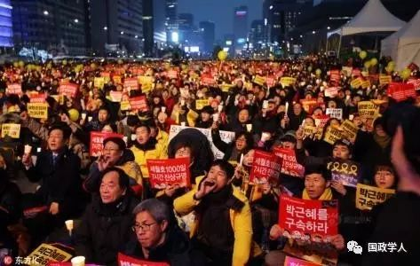

收录于合集

韩国政局动荡的特点、动因及影响
作者简介：
刘荣荣，山东大学外国语学院助理研究员，山东大学中日韩合作研究中心研究员，博士，主要从事韩国社会文化、中韩关系等研究。
王付东，中国现代国际关系研究院朝鲜半岛研究室助理研究员，主要从事朝鲜半岛问题研究。
本文来源： 《现代国际关系》2017年第1期
下载方式： 后台回复关键词“ 现代国际关系 ”自动获取
内容提要：
2016年10月，韩国朴槿惠政府爆发“亲信干政”丑闻，引发政局持续动荡，并导致国会通过朴槿惠弹劾案。韩国政局动荡呈现出民众参政热情高涨、新媒体和互联网大行其道、政治诉求多元化、集会“非暴力”等特点。“亲信干政”只是政局动荡的导火索，朴槿惠政府的政策失误与韩国长期积累下的政治、经济和社会弊端才是推动事态发展的根本动力。动荡后的韩国正面临着高涨的改革民意，新一轮政治、经济和社会改革步履维艰，政党版图剧烈变化，政治和社会极化等考验，其政局走向将影响半岛和地区局势。
关键词： 韩国政治 朴槿惠 亲信干政 朝鲜半岛

2016年10月，韩国朴槿惠政府爆发了“亲信干政”丑闻，引起轩然大波，对韩国政局的影响力远超外界想象。韩国连续数周爆发大规模烛光集会，在民众的高压下，韩国国会于12月9日以234票赞成、56票反对的绝对多数通过了对朴槿惠的弹劾案。此番韩国政局动荡存在哪些特点?一桩貌似并不罕见的丑闻为何掀起韩国政界飓风?有哪些深层次矛盾推动了韩国政局的剧变?未来韩国的政局走向如何?本文拟对这些问题进行探究。
1
朴槿惠的“亲信干政”并非近期才发生的新闻，韩国政界自20世纪70年代就有关于宗教活动家崔太敏及其女儿崔顺实与朴槿惠关系非比寻常的传闻。早在2007年，朴槿惠和李明博争夺大国家党总统候选人时，“亲李派”就爆料她受到崔顺实控制，但人们以为这是政治抹黑行为。2014年11月28日，韩国《世界日报》曝光了崔顺实的前夫郑润会秘密干政，朴槿惠“亲信干政”的问题开始为外界关注，但事情未被深究。2015年10月和2016年1月，韩国九大财阀分别捐款486亿韩元和288亿韩元设立了“MIＲ财团”和“K体育财团”。2016年下半年，媒体陆续爆出崔顺实和总统府的秘书安从范等人介入两家财团募资的传闻。同时，崔顺实女儿“走后门”考取梨花女子大学的丑闻也被曝光，引起该校师生抗议，大批警察参与镇压，崔顺实的政治圈引起关注。
10月24日，韩国“JTBC”电视台曝光了崔顺实电脑中存有总统演讲文草稿这一“重磅炸弹”，坐实了崔顺实与朴槿惠之间非同寻常的关系。韩国检察院设立“特别调查部”，开始调查该事件。朴槿惠连续3次发表对国民谈话表示道歉，试图挽回局面，但拒绝主动下台。民众开始每周举行大规模示威游行，对政府进行施压，政局风向大转，并最终促成朴槿惠弹劾案的通过。此次韩国政局动荡中表现出的一些特点，值得关注。
第一，民意沸腾促成政局剧变。近年来，韩国民众参政热情不高，多数人对政治漠不关心，“局外人”的感觉愈发强烈。2015年韩国一项统计显示，66．3%的民众不关心政治，59．6%的民众认为普通人无法对政治产生影响，仅有12%的人认为能对政治产生影响。由于未预料到民众反应，在丑闻爆发之初，韩国各党派争执不断。执政的新国家党与在野党之间，第一大在野党“共同民主党”与第二大在野党“国民之党”之间，新国家党内的“亲朴派”和“非朴派”之间，在更换总理人选、成立举国中立内阁、修改总统制的宪法规定、朴槿惠提前下台和进行大选等问题上争执不下，无法实质性推动事态解决。朴槿惠总统对民意也估计不足，几次对国民谈话都蜻蜓点水，否认自己有大的过错，反而认为能够扳回政局。甚至在烛光示威之初，还有保守议员宣称“烛光会被风吹灭的”。但民众的积极参与最终改变了政局走向，成为推动韩国政坛剧变的主要动力。自10月29日开始，韩国连续数周爆发烛光集会，参与人数增速惊人。朴槿惠弹劾案通过后，烛光集会仍未间断。截止2016年12月31日，已进行10次集会，共有1000多万人次参与。韩国人的政治参与热情以此为契机高涨。2008年“牛肉风波”集会的参加者以青年为主，而本轮集会的参加者年龄段更为平均，高年龄层的占比显著增加。民众对自身的力量也更为自信。集会现场的调查显示，75%的人认为民众集会对朴槿惠的去留和政局走向产生影响。⑤随着朴槿惠的支持率暴跌至4%的历史最低点，韩国任何一个政党、议员和政治人物都再也无法静观其变，而只能被民意裹挟前行。在野党摆脱了争执不断、犹豫不决的状态，拒绝了新国家党提出的朴槿惠4月提前下台的折中之策，坚定了弹劾朴槿惠、通过法律手段处理朴槿惠违法行为的决心。民意对朴槿惠的极度不满也加剧了新国家党的分裂，促使该党“非朴派”议员在弹劾案中倒戈一击，高票通过了弹劾案。韩国媒体惊呼，民众的力量改变了韩国政治的“语法”。
第二，新媒体和互联网加速了事件的发酵和扩大。无可否认，传统媒体在关注、爆料朴槿惠丑闻方面起到了重要作用。《朝鲜日报》最早爆出总统府秘书禹柄于涉嫌腐败，《韩民族》和“TV朝鲜”报道崔顺实和总统府安从范等人介入“MIＲ财团”和“K体育财团”，“JTBC”电视台获得了崔顺实电脑，发现了崔顺实与朴槿惠关系亲密的关键证据。但新媒体和互联网发挥的作用更为抢眼，主要表现在以下方面。一是促进了丑闻的快速传播，在烛光示威的组织中发挥了关键作用。韩国是世界上互联网和新媒体最为普及的国家之一，“脸书”用户多达1700万人。当总统丑闻曝光后，韩国的互联网上铺天盖地充斥着相关的报道、图像、分析和分享，网民们还顺藤摸瓜、不断挖掘出丑闻的新线索。与此前的烛光示威不同，本轮韩国烛光集会并没有强有力的组织者，但却实现了史上参加人数最多、井然有序、口号一致，这要归因于“脸书”等社交媒体在揭露丑闻、组织集会、引导统一行动发挥的枢纽作用。二是改变了韩国传统政治的游戏规则。某种程度上说，精英阶层通过复杂、专业化、一般人难以理解的制度设计，使一般民众无法轻易介入政治运行的黑屋子，从而确保精英统治的有效性和延续性。于是，当现存政治体制无法解决民众的关切时，通过“体制外”动力推动体制变革成为全球性的浪潮。与此类似，每当韩国民众对于现实政治有不满、要求改变的时候，常常会遇到政治精英们巧妙使用设计复杂的“制度”这堵墙来抵挡。本轮烛光示威为突破这一困境提供了一种新的工具、视角和思维方式。新媒体的支持者指出，“议员们四年里无所事事只是等待竞选，竞选结束后却没有‘售后服务’”，必须用信息技术革新落伍的代议制民主。新媒体为韩国民众提供了进行全民讨论政治议题的“公共空间”，民众在其中获得了更为实际的发言权和参政权，克服了政治精英与普通民众之间的鸿沟。关于朴槿惠丑闻的知识、信息和分析因之而不断深入，传统上“水泼不进”、封闭、专业的政治圈日益暴露在阳光下，政治运行越来越难以私密化。在此次动荡中“暴得大名”的城南市长李在明敏锐地意识到，现代政治的“范式”已经发生深刻变化，民众依靠新媒体和网络发挥集体智慧，逐步摆脱了从属于政治的处境，成为与政治圈对等的存在。
第三，政治诉求多元化。韩国近年的民众集会多针对美军装甲车压死女学生、派兵伊拉克、进口牛肉、自贸协定(FTA)等具体问题。但本轮集会民众并非只是要求朴槿惠下台，而是提出更为广泛和深刻的要求，不仅要求调查和修正朴槿惠任内的“世越号”事故、国立教科书、韩日慰安妇协议、开城工业园、“萨德”部署等争议问题，更是提出了进行根本性的政治经济制度改革，解决韩国几十年积累下来的顽疾，铲除产生腐败根源的诉求。在民众高涨的改革呼声下，左右两派的政治精英也纷纷提出了各自的改革主张。保守阵营的方案主要集中于政体改革，但无意进行深层制度性变革。如实行美国式的总统制，实现三权分立，由目前的五年单任期制改为四年可连任制。也有主张废除总统制、实行议会内阁制。进步阵营的主张则更进一步。他们指出，韩国政局动荡的根源不在朴槿惠和崔顺实个人，而在于产生这两个人的政治经济制度，因而韩国下一步的方向不仅仅是总统更替，而是进行政治、经济、社会等多方面的深层变革。政治上，克服代议制民主异化导致的民众与政治隔阂，增加民众的实质民主权利，实现社会公平公正。经济上，反对导致贫富分化的新自由主义政策，打破传统的财阀主导结构，保护中小企业发展和劳工权利，增进民众福利。还有激进的观点主张实行“直接民主主义”，由民众利用网络从普通市民中选出1000多名“议员”组成“市民议会”，积极介入现实政治。
第四，群众集会呈现非暴力、有秩序和可控的状态。本轮大规模群众集会不同于“4·19”运动、20世纪80年代的民主化运动和2008年牛肉风波等，未出现冲突流血和市民自杀等过激事件。民众定期在周末集会，表现克制理性，遵守法律，聚散有序，未影响到社会正常运行。警察与民众之间没有发生冲突，双方甚至共同喊出“非暴力”的口号。议会内部也表现比较克制，并未出现此前议员在弹劾案中打架的场景。民众诉求目前为止得到了政治精英的呼应，各方都表示服从法律和宪法，强调按规则办事，表明韩国公民社会和政治文化的发育逐步成熟。
2
韩国政局动荡并非单单是一次总统丑闻引发的政局突变、权力易位，其中既有朴槿惠政府的政策失误原因，又有韩国长期存在的深层矛盾作祟，并与国际大环境相互映衬。因此，对韩国当前局势剧变的深层动力分析尤为重要，成为我们了解当代政治风向变迁的一个重要参照物。
从现实层面来看，朴槿惠任内的一系列政策失误导致民心背离。内政方面，朴槿惠任期内屡屡出错。一是用人不察。由于生长在总统之家，朴槿惠自幼与外界接触较少，父亲朴正熙遇刺后，她更是长期与外界隔绝，缺乏在基层打拼、行政的经验，因此在用人方面经验不足，且不善沟通。从“亲信干政门”爆出的内容来看，朴槿惠只听信崔顺实等少数几个亲信的意见，而与阁僚、秘书、党内外议员的沟通严重不足，这也成为“亲信干政门”爆发的重要原因。二是任内危机事件频发，应对失措。2014年4月，“世越号”沉船事件发生后的七个小时内，朴槿惠竟然行踪不明，政府机构指挥迟缓、混乱、失误频频，导致救援不利，酿成304人死亡的特大事故，这成为朴槿惠弹劾案的指控内容之一。2015年，韩国爆发“中东呼吸综合征”疫情之初，各政府机关互相推诿、隐瞒信息、处理不畅，直到疫情扩大后才慌乱，导致疫情迟迟无法减退。为此，朴槿惠的支持率曾数次暴跌至30%以下。三是政党关系处理不佳。朴槿惠疏于与在野党沟通，并利用公权力打压在野势力，导致朝野对立激烈，极大影响了国政运行。例如，朴槿惠政府以“图谋煽动政变”为由强制解散了左翼的统合进步党，引发争议很大。朴槿惠在关闭开城工业园、历史教科书国有化(被外界攻击其借机为朴正熙的亲日和独裁洗白)、部署“萨德”、签署日韩《军事情报保护协定》等重大决策上，并未与在野党进行充分沟通，就单方面强行推进。在执政党———新国家党的内部事务上，朴槿惠因政见不同，施压罢免了新国家党刘乘旼议员的国会代表(党鞭)职务，打压前党首金武星等人，并在2016年4月议会选举的公荐中因打压异己而导致大败，引起党内“亲朴派”与“非朴派”的公开分裂，导致朴槿惠在弹劾案中遭遇执政党议员大幅倒戈。
外交方面，朴槿惠政策缺乏平衡感，加剧了韩国周边环境恶化。朴槿惠外交安保团队失衡，被称作外交安保“司令塔”的国家安保室两任室长金章洙和金宽镇都是以强硬保守而著名的军人出身，且都曾任防长，发挥中心作用，导致军方影响力越来越大，而外交部和统一部的作用逐渐弱化，对外政策屡屡因过度强硬而被外界诟病。对朝外交本是朴槿惠赢取国内支持的“王牌”，特别是她在任内对朝鲜进行的三次核试验的应对，因沉着果敢而换来国民的高支持率。但她提出的“韩半岛信赖进程”、“统一大发论”、“德累斯顿宣言”等诸多对朝政策设想毫无进展，被批评为善于绘制蓝图，缺乏实践。朴槿惠追随奥巴马政府的对朝“战略忍耐”政策，推动国际社会加大对朝制裁和孤立，导致南北之间的政治、经济、人文交流陷于全面停滞，半岛发生擦枪走火乃至引发大规模战争的可能性上升。因此，她的对朝政策逐渐受到专家和民众的质疑。在对华政策上，朴槿惠不顾中国和国内反对之声，在未与内部阁僚充分协商的情况下，强推“萨德”，使其前期苦心经营的中韩关系面临功亏一篑的局面，也使半岛卷入了中美大国对峙的险局。在对日外交上，朴槿惠前期在慰安妇、历史问题上坚持原则，对日外交是其加分项，但后期不顾国内反对，强行与日本政府达成慰安妇问题解决协议和签署日韩情报保护协定，大大触怒了民众，反而让日本掌握了外交主动权。经济方面，朴槿惠继续维持财阀主导的经济体制，无力推动经济结构调整。朴槿惠上台之初曾誓言推行“经济民主化”，抑制财阀和扶植中小企业发展，但她与三星、现代、LG等大财阀总裁之间“剪不断、理还乱”的复杂关系被曝光，反映了朴槿惠对财阀的高度依赖。财阀经济抑制了韩国中小企业发展和创新，导致韩国经济迟迟不能转型升级，经济增长率持续下滑。朴槿惠提出的创意经济、“474”经济发展目标(实现潜在经济增长率4%、就业率70%、国民收入4万美元)也成为泡影。2015年韩国GDP增速降至2．6%，创三年最低。2016年，韩国青年失业率高达10．3%，创下17年来新高。
冰冻三尺，非一日之寒。当前韩国政局的动荡固然与朴槿惠执政失误和个人问题等有密切关系，但韩国社会长期积累的政治、经济和社会顽疾才是推动事态发展的根本动力。
其一，普通民众、进步势力与保守政治精英积怨已久。二战结束后，美军扶植成立的韩国政府未对日本殖民地时期的亲日势力进行清算，反而不顾民众的反对继续加以重用，使之与亲美势力共同成为新政权的支柱，逐步演化为韩国的保守派。保守势力依靠美国支持，一直在韩国政治、经济和社会生活中掌握主导权和话语权，形成了庞大的既得利益集团。保守集团以防止共产主义渗透为借口，处处打压进步势力和普通民众，双方尖锐的矛盾自建国初期就已开始。实现民主化之后，特别是在两届进步政权(1998～2008年的金大中和卢武铉政权)期间，对保守势力进行了一定抑制，但未动摇其在各领域根深蒂固的主导地位。普通民众、进步势力与保守政治精英之间的矛盾仿佛一道裂纹潜伏在韩国的政治地壳之内，成为变动时期推动形势发展的潜在源动力。在李明博和朴槿惠两届保守政府时期，保守势力再度膨胀，获得政府多方面扶持，控制着多数政府机关、军队、机构、大学、媒体等。普通民众和进步势力在就业、教育、社会福利等方面备受打压，积怨已久。近年，国际人权组织多次批评韩国人权和言论自由状况恶化。崔顺实事件暴露了韩国上层政治运作的黑幕，普通民众和进步势力对朴槿惠为代表的保守政治精英的幻想破灭，成为引爆长期矛盾的导火索。
其二，财阀垄断、政经勾结沉疴泛起。一是财阀阻碍了韩国经济转型升级和持续增长。韩国自建国之初就推行威权资本主义，少数企业依靠政府支持在处理殖民地产业和外援物资等方面进行了原始资本积累。特别是在朴正熙时代，通过扶植少数大企业扩张实现工业化和经济起飞，形成了大宇、三星、现代、LG、乐天等至今耳熟能详的大财阀。民主化以来，财阀依旧垄断着国民经济的大部分领域，例如三星的产业链包括电子、金融、机械、化学、医疗、教育等众多领域，民众从生到死都离不开三星的产品，以至韩国被称为“三星共和国”。不可否认，财阀在韩国工业化和现代化的过程中发挥过积极作用。但在现阶段，财阀垄断侵害了中小企业和普通劳工利益，抑制了公平的市场竞争和创新，加剧了青年失业和贫富分化，成为韩国产业转型升级的障碍。2012年十大财阀的资产占到了韩国GDP的85%，最富的10%阶层占据国民总收入的48．95%，中下层的70%阶层却仅占18．87%。韩国也成为经合组织中仅次于美国的财富最不均等国家。二是政商勾结、财阀特权激起民愤。民主化仍未能切断政商勾结顽疾，财阀向政客提供黑金用于竞选和施政，政客推行亲财阀的政策，韩国历届总统及家人都曝出了与财阀勾结的丑闻。朴槿惠及其亲信与财阀之间存在频繁的利益置换，再次暴露了韩国政经勾结的痼疾，成为引起本轮民情激愤的主要原因。财阀也借助政治庇护而在韩国社会飞扬跋扈，民众对财阀的愤怒蓄积已久。据统计，近10年间，韩国十大财阀家族有一半曾牵涉刑事案件，在韩国公正交易委员会指定的49家财阀中，约有32%曾被起诉并被判决有罪，但财阀家族犯案即使被判有罪，也几乎不受处罚或很轻。
其三，全球经济、政治周期与韩国社会发生共振。韩国是以外贸立国的外向型经济体，受世界经济形势影响非常大。世界经济尚未从2008年全球金融危机中复苏，对韩国经济的冲击很大。韩国曾长期受惠于经济全球化和区域一体化，但全球化带来的资本自由流动导致国内贫富差距加大。加之1997年亚洲金融危机后，韩国在新自由主义经济学的道路上越走越远，重视增长和效率、轻视福利和劳工权利，韩国经济的自由度和开放度大为增加，也加剧了贫富分化和社会矛盾。全球兴起的“反建制”、反既得利益运动(如英国脱欧、特朗普当选美国总统等)也带来了波及效应，与韩国国内群众运动遥相呼应。因此，应当把近期韩国的大规模示威视作全球“反建制”运动浪潮的一部分。
其四，政治制度设计缺陷致韩政局动荡常态化。韩国自1987年民主化运动之后建立的“第六共和国”开始，才逐步形成如今的政治制度，运行时间仅30年，期间反复发生的总统滥权和政局不稳与其制度设计上的弊端密切相关，主要表现有以下几点。一是总统权力过大，缺乏有效制衡。韩国总统制并非纯粹的三权分立，而是含有议会内阁制的许多要素，有利于总统获得更大权力，以致于被称作“帝王式的总统制”。例如，总统对立法(议会)和司法(法院、检察院)的影响力很大，有权向议会提交法案，并轻易在占据多数席位的议会中通过有利于己的立法。议员可兼任政府官员，实现立法机构与行政机构的合流。韩国的大法官并非终身制，总检察长也由总统提名，受制于总统。当初为了防止总统擅权而制定的五年单任期制，反而使现任总统无需顾忌下届竞选，更容易出现滥权。上述韩国总统制的特点与议会制国家相似，不同的是，即使韩国执政党失去了议会多数席位，总统仍然可以保留其职位。正是因为缺乏有效监督和制约，才为韩国总统滥用职权提供了可乘之机。韩多次爆出在任总统利用司法、军队和安全机构打压异己的丑闻。二是政党制度存在缺陷。在当今的总统制国家，总统权限(行政权)扩大化是较为普遍的现象，执政党内部对总统的牵制就变得非常重要。但不同于美国各党派与党员之间的松散关系，韩国各党派采取“中央集权”式的构造，党内高层在指定议员候选人、统一党内议员意见等方面具有绝对权威。由于韩国总统在当选后仍是执政党的实质党首，该党议员对总统提出的法案、政策往往无法表达不同意见，党内缺乏对总统的有效制衡，“政党个人化”现象严重。若执政党为国会多数党，总统可轻易通过掌控执政党来控制议会。但总统权力过大和滥权也导致了党际和党内的激烈冲突，朴槿惠丑闻的爆出与党派斗争有重要关系。朴槿惠任内对在野党和执政党内其他派系议员极尽打压，各党派对于朴槿惠极度不满，成为倒朴的重要动力。在曝光和推倒朴槿惠的过程中，一向水火不容的进步势力和保守势力中的“非朴派”竟然走到了同一阵线。“非朴派”最早提出朴槿惠退居二线、举国内阁、提前下台、早期大选等应急方案，意在逼朴槿惠交权。进步势力也趁机跟进，推动倒朴运动的深入。三是传统陋习阻碍政治制度运行。决定一个国家制度运营的不仅是法律、法规等“明规则”，该国长期的文化传统、社会习惯等“潜规则”对于制度能否有效运行也发挥着重要作用。韩国社会等级秩序森严，强调上尊下卑，崇拜权力，重视血缘、学缘、地缘差别，拉帮结派和结党营私之风盛行，缺乏民主制所要求的平等、协商、妥协、公共利益等观念。这点表现最明显的是韩国的政党结构。韩国党派众多，且常常“城头变幻大王旗”，政党的聚散兴亡是家常便饭，各党派及其不同派系之间常常视党派利益高于公共利益，热衷争斗，缺乏必要的妥协和合作，导致国会运行难得通畅，极大影响了政局的平稳运行。再比如，按照宪法规定，韩国检察院系统是独立于行政的，但由于政府部门的许多高官有检察官经历，其可以利用韩国社会广泛存在的前后辈、同僚关系干扰司法运行，易出现司法腐败，以致于韩国被称为“检察共和国”。2013年，韩国爆出军队和安全机构在2012年大选中散布网络谣言助选朴槿惠的丑闻，但司法机构的调查避重就轻，不了了之。
3
韩国国会通过朴槿惠弹劾案后，并不意味着其政局动荡的结束，韩国政局还面临着许多更为艰巨的任务。“亲信干政”的内幕调查、宪法法院判决、下届大选准备、改宪、政经制度改革等关键议题依旧悬而未决，而且很难在短时期内完成。
第一，要求改革的民意不会轻易消散。正是在大规模群众示威的巨大压力下，“亲信干政门”从一桩普通的政治丑闻发展为搅乱朴槿惠政府的惊天巨浪。弹劾案通过后，韩国每周仍有几十万人参加大规模集会。民众希望消除产生腐败的体制性根源，而非停留在惩治朴槿惠和崔顺实等个人。依长时段观之，当前韩国政局的演变具有其内在周期，自“4·19”运动、1987年民主化运动以后，2016年迎来规模空前的第三波群众运动浪潮。大约每隔30年的时间，韩国就需要对僵化的体制进行大的更新。本次群众运动针对的正是过去30年中所形成的众多政治、经济积弊，因而将长远地改变韩国的走向。积极的观点认为，韩国民众利用大规模集会示威等外力纠正了现有政治制度自身无法克服的弊端，有利于推动韩国政治体制的净化和良性运转。但也有人担心民众情绪会发展为民粹主义，短期内难以平复，从而导致政局的持续动荡。《朝鲜日报》社论担忧称“今天的烛光集会是明日的老虎，老虎一旦从森林里跑出来就会很难走回去”，“下届总统会是烛光示威的下一个受害者”。
第二，政治、经济和社会改革知易行难。韩国政治运行失序、财阀垄断等问题根深蒂固、盘根错节，都是牵一发而动全身的“硬骨头”，克服世界性的资本主义危机周期也并非易事，因此当下的改革阻力极大。目前，各党派纷纷提出了各自的改革主张。保守势力等提出的修宪、改革总统制和选举制、实行议会内阁制等做法属于老调重弹，仅是对现有制度的小修小补，而且是为了限制进步势力，回避了韩国社会愈演愈烈的结构性矛盾。进步势力认识到了韩国当前存在的深刻危机，也提出了进行政治、经济制度改革的口号，但仍缺乏可行性方案，而且能否撼动韩国几十年来业已形成的政经结构也未可知。综而观之，各政党提出的应对之策多出于选举策略和本党利益的考虑，而并非出于公心，也缺乏足够的改革魄力和可行的政策主张。若政治精英无法满足民意要求，则恐怕只能被愤怒的民意裹挟前行，政局难免陷入长时间漂流状态。
第三，政党版图剧烈变化。在突如其来的政治动荡冲击下，各政治势力出现了明显的此消彼长，各方正在围绕政治权力的重构而积极合纵连横。2016年底，朴槿惠丑闻对保守势力造成了沉重打击。民调显示，保守党的主要支持阶层———中老年龄层大举转投进步阵营，其传统票仓———岭南地区(庆尚南道、庆尚北道、大邱、釜山)的优势也丧失殆尽。为挽回败局，新国家党的“非朴派”议员已大举脱党成立名为“正党”的保守新党，这是韩国历史上保守党的首次大分裂。联合国前秘书长潘基文已暗示参加大选，保守新党与“中道偏左”的国民之党吐露出联合挺潘的意愿。进步势力虽受惠于朴槿惠丑闻而支持率暴涨，但其内部已呈现分化的趋势。弹劾案通过后，两大在野党———共同民主党和国民之党已分道扬镳。目前支持率最高的共同民主党内部，也存在“文在寅派”和“非文派”的激烈矛盾，可能会削弱该党在大选中的优势。各政党的分分合合，给本已动荡的韩国政局增添了新的不确定性。
第四，政治和社会极化加剧。此次政局动荡中，传统的政治大腕因政策主张难脱传统政治的窠臼而纷纷失宠，敢于“离经叛道”、打破传统政治思维的政治新秀大行其道。在潜在总统候选人支持率方面，保守阵营的潘基文、刘承旼、吴世勋等传统政治明星受朴槿惠牵连而支持率下滑自不必提，而进步阵营的文在寅、安哲秀、朴元淳、孙鹤圭等传统政治“潜龙”的受益也较为有限。反而是政治圈的“边缘人”———城南市长李在明，因在乱局中观点鲜明、敢作敢为、打破政治常规，而被民众视为能够解决当前乱局的奇才，从默默无闻到支持率一个月内攀升至第三，与此前大幅领先的文在寅和潘基文形成鼎足之势，成为乱局的最大受益者。李在明自许“韩国的桑德斯”，主张与民众打成一片，反对俗套的“政治正确”，明确主张严惩朴槿惠、崔顺实及涉事财阀总裁以儆效尤，打破韩国长期以来形成的财阀垄断，增加民众福利，反对受制于保守和进步两部分的意识形态，在对朝政策上主张制裁和外交手段并用，认为“萨德”对韩弊大于利而明确反对等。不仅如此，潘基文、文在寅等一向以“斯文”著称的传统政治人物，在新的政治生态下，其言论和态度也一反常态地变得强硬和鲜明，凸显了这个时代求新求异、渴望变革的政治风向。潘基文公开严厉批评同一阵营且支持他的朴槿惠“背弃人民信任”，并把当前乱局视为朝鲜战争以来的最大混乱。文在寅的言论也不断挑战传统竞选的大忌，如提出当选总统后可先访问朝鲜，打破财阀和既得利益阶层的垄断，“清除韩国半个世纪的积弊”，不顾美国反对而要求延迟“萨德”部署等。而且，随着动荡的延续，在反朴集会中一度联合的左右阵营的民众呈现分裂之势。得益于半岛长期的冷战结构，保守势力在韩国社会根深蒂固。保守派民众越来越担心进步派民众可能危及当前的基本制度，因而在弹劾案通过后，保守阵营反而出现了反弹的态势，“改革保守新党”与新国家党的合计支持率已28．1%，与共同民主党的29．5%非常接近。支持朴槿惠的“爱朴会”也每周举行集会以对抗反朴集会，韩国左右阵营民众的撕裂难以避免。
第五，韩国政局变化将对朝鲜半岛和地区形势产生很大影响。朴槿惠曾依靠对朝强硬等外交安保政策为其加分不少，韩国军方和保守派也刻意渲染朝鲜威胁，希望延续这种优势，但最终还是败于迷信外交安保而忽视了内政危机。这也正是外交安保与内政相互依存但又矛盾之处。从这个角度上来看，外交安保还是服务于内政。此次政局动荡表明，韩国民众的关心事项也在发生着“向内转”，朝核问题等外交安保问题已不是民众的主要关心事项，民众关注国内事务远胜过国际事务。套用1992年美国大选时克林顿的宣传口号“笨蛋，问题是经济!”，当下韩国最迫切的问题也是内政和经济。对于下届韩国政府来说，能否集中精力进行国内政治、经济改革，在朝核和“萨德”等问题上作出更灵活的姿态，避免地区形势的尖锐对峙和半岛沦为中美大国对冲的舞台，是至关重要的课题。
编辑：晞哲
声 明
国政学人微信公众平台系非盈利学术平台。本文分享之目的是方便广大学人进行学术研究，促进学术的传播和交流，不做任何商业用途。如有任何权利问题，请直接与我们联系。
相关阅读：
期刊分享 | 国际关系相关专业所有核心期刊免费获取（最新pdf版）
叶晓迪、杨佳龙：中国外交转型的困境:“体系- 单元”的双层结构解析
释启鹏、韩冬临：当代社会运动中的政权崩溃——“颜色革命”与“阿拉伯之春”的定性比较分析
“国政学人”微信公众平台立足于政治学、国际政治与国际关系等专业领域，系统更新最新核心期刊与经典著作，兼顾社科学术研究方法和论文写作技巧的普及。“我们既生产学术，又做学术的搬运工。”“国政学人”致力于打造广大学人的掌上图书馆与高端学术传播平台，立志为中国国际政治学的传播与发展贡献自己的一份力量。
如果您有佳作或批评建议，请编辑内容发送至guozhengxueren@163.com, 欢迎来信与投稿！请动动手指分享到您身边的学术群、朋友圈，让国政学人惠及更多的朋友，